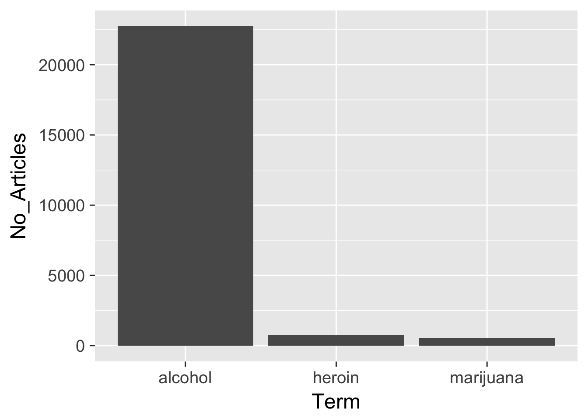
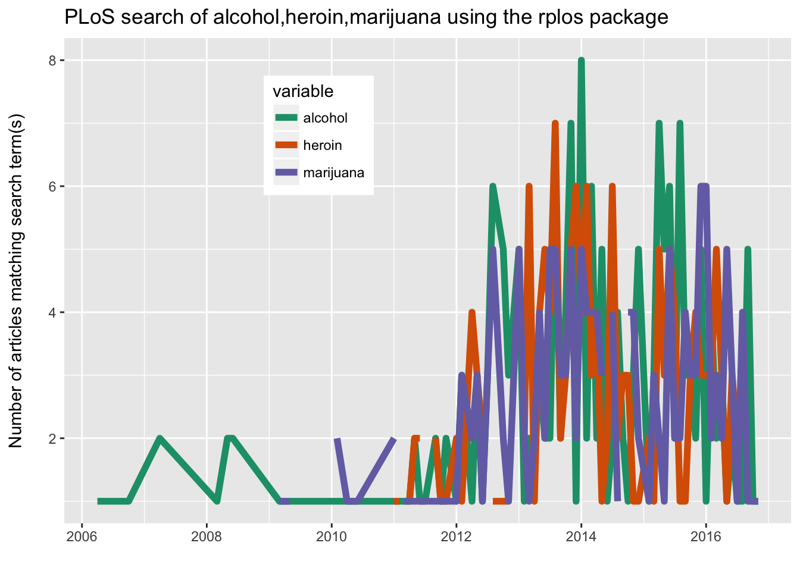

This content is from the fall 2016 version of this course. Please go here for the most recent version.
Getting data from the web: API access
library(tidyverse)
library(knitr)Objectives
- Identify multiple methods for obtaining data from the internet
- Define application program interface (API)
- Explain authentication keys and demonstrate secure methods for storing these keys
- Demonstrate how to use canned packages in R to access APIs
- Practice gathering data from Twitter API using the
twitteRpackage in R
Methods for obtaining data online
There are many ways to obtain data from the Internet. Four major categories are:
- click-and-download on the internet as a “flat” file, such as .csv, .xls
- install-and-play an API for which someone has written a handy R package
- API-query published with an unwrapped API
- Scraping implicit in an html website
Click-and-Download
In the simplest case, the data you need is already on the internet in a tabular format. There are a couple of strategies here:
- Use
read.csvorreadr::read_csvto read the data straight into R - Use the
downloaderpackage orcurlfrom the shell to download the file and store a local copy, then useread_csvor something similar to read the data into R- Even if the file disappears from the internet, you have a local copy cached
Even in this instance, files may need cleaning and transformation when you bring them into R.
Data supplied on the web
Many times, the data that you want is not already organized into one or a few tables that you can read directly into R. More frequently, you find this data is given in the form of an API. Application Programming Interfaces (APIs) are descriptions of the kind of requests that can be made of a certain piece of software, and descriptions of the kind of answers that are returned. Many sources of data - databases, websites, services - have made all (or part) of their data available via APIs over the internet. Computer programs (“clients”) can make requests of the server, and the server will respond by sending data (or an error message). This client can be many kinds of other programs or websites, including R running from your laptop.
Install and play packages
Many common web services and APIs have been “wrapped”, i.e. R and Python functions have been written around them which send your query to the server and format the response.
Why do we want this?
- provenance
- reproducible
- updating
- ease
- scaling
Sightings of birds: rebird
rebird is an R interface for the ebird database. e-Bird lets birders upload sightings of birds, and allows everyone access to those data.
install.packages("rebird")library(rebird)Search birds by geography
The ebird website categorizes some popular locations as “Hotspots”. These are areas where there are both lots of birds and lots of birders. Once such location is at Lincoln Park Zoo in Chicago. You can see data for this site at http://ebird.org/ebird/hotspot/L1573785
At that link, you can see a page like this:

Lincoln Park Zoo
The data already look to be organized in a data frame! rebird allows us to read these data directly into R. (The ID code for Lincoln Park Zoo is **“L1573785**)
ebirdhotspot(locID = "L1573785") %>%
tbl_df()## Warning: `rbind_all()` is deprecated. Please use `bind_rows()` instead.## # A tibble: 23 × 11
## lng locName howMany sciName
## <dbl> <chr> <int> <chr>
## 1 -87.63272 Lincoln Park Zoo, Chicago 11 Aix sponsa
## 2 -87.63272 Lincoln Park Zoo, Chicago 2 Anas rubripes
## 3 -87.63272 Lincoln Park Zoo, Chicago 160 Anas platyrhynchos
## 4 -87.63272 Lincoln Park Zoo, Chicago 1 Larus delawarensis
## 5 -87.63272 Lincoln Park Zoo, Chicago 2 Corvus brachyrhynchos
## 6 -87.63272 Lincoln Park Zoo, Chicago 14 Sturnus vulgaris
## 7 -87.63272 Lincoln Park Zoo, Chicago 3 Cardinalis cardinalis
## 8 -87.63272 Lincoln Park Zoo, Chicago 3 Passer domesticus
## 9 -87.63272 Lincoln Park Zoo, Chicago 12 Branta canadensis
## 10 -87.63272 Lincoln Park Zoo, Chicago 1 Zonotrichia albicollis
## # ... with 13 more rows, and 7 more variables: obsValid <lgl>,
## # locationPrivate <lgl>, obsDt <chr>, obsReviewed <lgl>, comName <chr>,
## # lat <dbl>, locID <chr>We can use the function ebirdgeo to get a list for an area. (Note that South and West are negative):
chibirds <- ebirdgeo(lat = 41.8781, lng = -87.6298)## Warning: `rbind_all()` is deprecated. Please use `bind_rows()` instead.chibirds %>%
tbl_df() %>%
head() %>%
kable()| lng | locName | howMany | sciName | obsValid | locationPrivate | obsDt | obsReviewed | comName | lat | locID |
|---|---|---|---|---|---|---|---|---|---|---|
| -87.61893 | Grant Park, Chicago | 6 | Corvus brachyrhynchos | TRUE | FALSE | 2016-11-16 13:30 | FALSE | American Crow | 41.87652 | L454170 |
| -87.61893 | Grant Park, Chicago | 5 | Columba livia | TRUE | FALSE | 2016-11-16 13:30 | FALSE | Rock Pigeon | 41.87652 | L454170 |
| -87.61893 | Grant Park, Chicago | 40 | Larus delawarensis | TRUE | FALSE | 2016-11-16 13:30 | FALSE | Ring-billed Gull | 41.87652 | L454170 |
| -87.61893 | Grant Park, Chicago | 2 | Cardinalis cardinalis | TRUE | FALSE | 2016-11-16 13:30 | FALSE | Northern Cardinal | 41.87652 | L454170 |
| -87.61893 | Grant Park, Chicago | 4 | Passer domesticus | TRUE | FALSE | 2016-11-16 13:30 | FALSE | House Sparrow | 41.87652 | L454170 |
| -87.61893 | Grant Park, Chicago | 6 | Haemorhous mexicanus | TRUE | FALSE | 2016-11-16 13:30 | FALSE | House Finch | 41.87652 | L454170 |
Note: Check the defaults on this function. e.g. radius of circle, time of year.
We can also search by “region”, which refers to short codes which serve as common shorthands for different political units. For example, France is represented by the letters FR
frenchbirds <- ebirdregion("FR")## Warning: `rbind_all()` is deprecated. Please use `bind_rows()` instead.frenchbirds %>%
tbl_df() %>%
head() %>%
kable()| lng | locName | howMany | sciName | obsValid | locationPrivate | obsDt | obsReviewed | comName | lat | locID |
|---|---|---|---|---|---|---|---|---|---|---|
| 1.476020 | Terrain tennis GET | 1 | Strix aluco | TRUE | TRUE | 2016-11-15 20:00 | FALSE | Tawny Owl | 43.56071 | L4910164 |
| 3.868451 | FR-Languedoc-Roussillon-Montpellier-Agropolis I - 43,6473x3,8685 | 2 | Cyanistes caeruleus | TRUE | TRUE | 2016-11-15 18:03 | FALSE | Eurasian Blue Tit | 43.64731 | L5083936 |
| 3.868451 | FR-Languedoc-Roussillon-Montpellier-Agropolis I - 43,6473x3,8685 | 5 | Sylvia melanocephala | TRUE | TRUE | 2016-11-15 18:03 | FALSE | Sardinian Warbler | 43.64731 | L5083936 |
| 3.868451 | FR-Languedoc-Roussillon-Montpellier-Agropolis I - 43,6473x3,8685 | 3 | Parus major | TRUE | TRUE | 2016-11-15 18:03 | FALSE | Great Tit | 43.64731 | L5083936 |
| 3.868451 | FR-Languedoc-Roussillon-Montpellier-Agropolis I - 43,6473x3,8685 | 30 | Corvus monedula | TRUE | TRUE | 2016-11-15 18:03 | FALSE | Eurasian Jackdaw | 43.64731 | L5083936 |
| 3.868451 | FR-Languedoc-Roussillon-Montpellier-Agropolis I - 43,6473x3,8685 | 3 | Columba palumbus | TRUE | TRUE | 2016-11-15 18:03 | FALSE | Common Wood-Pigeon | 43.64731 | L5083936 |
Find out WHEN a bird has been seen in a certain place! Choosing a name from chibirds above (the Bald Eagle):
warbler <- ebirdgeo(species = 'Setophaga coronata', lat = 41.8781, lng = -87.6298)## Warning: `rbind_all()` is deprecated. Please use `bind_rows()` instead.warbler %>%
tbl_df() %>%
head() %>%
kable()| lng | locName | howMany | sciName | obsValid | locationPrivate | obsDt | obsReviewed | comName | lat | locID |
|---|---|---|---|---|---|---|---|---|---|---|
| -87.76981 | Columbus Park, Chicago | 2 | Setophaga coronata | TRUE | FALSE | 2016-11-15 07:31 | FALSE | Yellow-rumped Warbler | 41.87518 | L108479 |
| -87.76368 | Skokie Lagoons Forest Preserve–Willow Rd. | 2 | Setophaga coronata | TRUE | FALSE | 2016-11-15 07:00 | FALSE | Yellow-rumped Warbler | 42.10221 | L124256 |
| -87.88874 | Salt Creek Woods Nature Preserve | 1 | Setophaga coronata | TRUE | FALSE | 2016-11-12 07:55 | FALSE | Yellow-rumped Warbler | 41.82832 | L724602 |
| -87.61540 | Grant Park, Chicago–Museum Campus | 1 | Setophaga coronata | TRUE | FALSE | 2016-11-10 11:20 | FALSE | Yellow-rumped Warbler | 41.86640 | L152687 |
| -87.63442 | Montrose Point, Lincoln Park, Chicago | 1 | Setophaga coronata | TRUE | FALSE | 2016-11-08 07:37 | FALSE | Yellow-rumped Warbler | 41.96338 | L161180 |
| -87.62359 | US-IL-Chicago-2600-2702 S Michigan Ave - 41.8455x-87.6236 | 1 | Setophaga coronata | TRUE | TRUE | 2016-11-07 07:38 | FALSE | Yellow-rumped Warbler | 41.84555 | L5065218 |
rebird knows where you are:
ebirdgeo(species = 'Setophaga coronata') %>%
tbl_df() %>%
head() %>%
kable()## Warning: As a complete lat/long pair was not provided, your location was
## determined using your computer's public-facing IP address. This will likely
## not reflect your physical location if you are using a remote server or
## proxy.## Warning: `rbind_all()` is deprecated. Please use `bind_rows()` instead.| lng | locName | howMany | sciName | obsValid | locationPrivate | obsDt | obsReviewed | comName | lat | locID |
|---|---|---|---|---|---|---|---|---|---|---|
| -87.76981 | Columbus Park, Chicago | 2 | Setophaga coronata | TRUE | FALSE | 2016-11-15 07:31 | FALSE | Yellow-rumped Warbler | 41.87518 | L108479 |
| -87.88874 | Salt Creek Woods Nature Preserve | 1 | Setophaga coronata | TRUE | FALSE | 2016-11-12 07:55 | FALSE | Yellow-rumped Warbler | 41.82832 | L724602 |
| -87.61540 | Grant Park, Chicago–Museum Campus | 1 | Setophaga coronata | TRUE | FALSE | 2016-11-10 11:20 | FALSE | Yellow-rumped Warbler | 41.86640 | L152687 |
| -87.63442 | Montrose Point, Lincoln Park, Chicago | 1 | Setophaga coronata | TRUE | FALSE | 2016-11-08 07:37 | FALSE | Yellow-rumped Warbler | 41.96338 | L161180 |
| -87.62359 | US-IL-Chicago-2600-2702 S Michigan Ave - 41.8455x-87.6236 | 1 | Setophaga coronata | TRUE | TRUE | 2016-11-07 07:38 | FALSE | Yellow-rumped Warbler | 41.84555 | L5065218 |
| -87.43790 | Highland Rookery (Cline Ave. Marsh) | 1 | Setophaga coronata | TRUE | FALSE | 2016-11-04 14:00 | FALSE | Yellow-rumped Warbler | 41.56272 | L2235142 |
Searching geographic info: geonames
# install.packages(geonames)
library(geonames)API authentication
Many APIs require you to register for access. This allows them to track which users are submitting queries and manage demand - if you submit too many queries too quickly, you might be rate-limited and your requests de-prioritized or blocked. Always check the API access policy of the web site to determine what these limits are.
There are a few things we need to do to be able to use this package to access the geonames API:
- go to the geonames site and register an account.
- click here to enable the free web service
- Tell R your geonames username. You could run the line
options(geonamesUsername = "my_user_name")in R. However this is insecure. We don’t want to risk committing this line and pushing it to our public GitHub page! Instead, you should create a file in the same place as your .Rproj file. Name this file .Rprofile, and add
options(geonamesUsername = "my_user_name")to that file.
Important
- Make sure your
.Rprofileends with a blank line - Make sure
.Rprofileis included in your.gitignorefile, otherwise it will be synced with Github - Restart RStudio after modifying
.Rprofilein order to load any new keys into memory - Spelling is important when you set the option in your
.Rprofile - You can do a similar process for an arbitrary package or key. For example:
# in .Rprofile
options("this_is_my_key" = XXXX)
# later, in the R script:
key <- getOption("this_is_my_key")This is a simple means to keep your keys private, especially if you are sharing the same authentication across several projects. Remember that using .Rprofile makes your code un-reproducible. In this case, that is exactly what we want!
Using Geonames
What can we do? Get access to lots of geographical information via the various “web services”
countryInfo <- GNcountryInfo()countryInfo %>%
tbl_df() %>%
head() %>%
kable()| continent | capital | languages | geonameId | south | isoAlpha3 | north | fipsCode | population | east | isoNumeric | areaInSqKm | countryCode | west | countryName | continentName | currencyCode |
|---|---|---|---|---|---|---|---|---|---|---|---|---|---|---|---|---|
| EU | Andorra la Vella | ca | 3041565 | 42.4284925987684 | AND | 42.6560438963 | AN | 84000 | 1.78654277783198 | 020 | 468.0 | AD | 1.40718671411128 | Principality of Andorra | Europe | EUR |
| AS | Abu Dhabi | ar-AE,fa,en,hi,ur | 290557 | 22.6333293914795 | ARE | 26.0841598510742 | AE | 4975593 | 56.3816604614258 | 784 | 82880.0 | AE | 51.5833282470703 | United Arab Emirates | Asia | AED |
| AS | Kabul | fa-AF,ps,uz-AF,tk | 1149361 | 29.377472 | AFG | 38.483418 | AF | 29121286 | 74.879448 | 004 | 647500.0 | AF | 60.478443 | Islamic Republic of Afghanistan | Asia | AFN |
| NA | Saint John’s | en-AG | 3576396 | 16.996979 | ATG | 17.729387 | AC | 86754 | -61.672421 | 028 | 443.0 | AG | -61.906425 | Antigua and Barbuda | North America | XCD |
| NA | The Valley | en-AI | 3573511 | 18.166815 | AIA | 18.283424 | AV | 13254 | -62.971359 | 660 | 102.0 | AI | -63.172901 | Anguilla | North America | XCD |
| EU | Tirana | sq,el | 783754 | 39.648361 | ALB | 42.665611 | AL | 2986952 | 21.068472 | 008 | 28748.0 | AL | 19.293972 | Republic of Albania | Europe | ALL |
This country info dataset is very helpful for accessing the rest of the data, because it gives us the standardized codes for country and language.
Searching the Public Library of Science: rplos
PLOS ONE is an open-access journal. They allow access to an impressive range of search tools, and allow you to obtain the full text of their articles. Unlike geonames, rplos no longer requires an individual key to access the API.
install.packages("rplos")library(rplos)Let’s do some searches:
searchplos(q = "alcohol", fl = "id,title", limit = 10) %>%
kable()
|
|
Relative frequency plot
out <- plosword(list("alcohol", "heroin", "marijuana"),
vis = "TRUE")
out$table## No_Articles Term
## 1 22873 alcohol
## 2 747 heroin
## 3 518 marijuanaout$plot
Here is a list of options for the search.
Plots over time
plot_throughtime(terms = c("alcohol", "heroin", "marijuana"), limit = 200)## Warning: Removed 5 rows containing missing values (geom_path).
Scraping Twitter
install.packages("twitteR")library(twitteR)There are several packages for R (and Python) for accessing and searching Twitter. Twitter actually has two separate APIs:
- The REST API - this allows you programmatic access to read and write Twitter data. For research purposes, this allows you to search the recent history of tweets and look up specific users.
- The Streaming API - this allows you to access the public data flowing through Twitter in real-time. It requires your R or Python session to be running continuously, but allows you to capture a much larger sample of tweets while avoiding rate limits for the REST API.
Packages
twitteRis the most popular package for R, but it only allows you to access the REST API.streamRis more complicated, but allows you to query the Streaming API from R.tweepyis a package for Python that allows you to access both the REST and Streaming APIs.
Here, we are going to practice using the twitteR package to search Twitter.
OAuth authentication
OAuth is an open standard for authorization, commonly used as a way for Internet users to authorize websites or applications to access their information on other websites but without giving them the passwords. This still requires an API key, but is a bit more complicated to setup.
- The first step is to create a Twitter application for yourself. In order to do this, you do need to have a registered Twitter account. Go to (https://apps.twitter.com/app/new) and log in. After filling in the basic info (make sure to set the “Callback URL” to (http://127.0.0.1:1410)), go to the Permissions tab and select “Read, Write and Access direct messages”. Make sure to click on the save button after doing this. In the Details tab, take note of your consumer key and consumer secret.
Store your API key and token using the
.Rprofilemethod. Edit.Rprofileand addRestart RStudio to get the keys loaded into your environment.options(twitter_api_key = "Your API key") options(twitter_api_token = "Your API secret")Run from the console:
This will open your browser and take you to a page to authorize your app to access your Twitter account. You need this in order to search any content on Twitter.setup_twitter_oauth(consumer_key = getOption("twitter_api_key"), consumer_secret = getOption("twitter_api_token"))At this point you should get a message back in RStudio “Authentication complete.” You’re done setting up the authentication for
twitteR.
You must do this in order to query Twitter from within a non-interactive session (i.e. an R Markdown document or using source() to run a script). If you do not, you will get an error because R will not be able to finish the authentication process without your input.
Searching tweets
## [1] "Using browser based authentication"tweets <- searchTwitter('#rstats', n = 5)
tweets## [[1]]
## [1] "LovedeepSG: RT @Rbloggers: R Jobs for R users – 10 jobs from around the world (2016-11-17) https://t.co/w7xBuwQFf3 #rstats #DataScience"
##
## [[2]]
## [1] "tarakc02: RT @tarakc02: Currently in development: rmapzen, an #rstats package to access the @mapzen search API https://t.co/L3QVVNEtZM -- feedback ap…"
##
## [[3]]
## [1] "G_Devailly: New #rstats coding style makes it as readable as #perl : https://t.co/pRxUmAsh9f"
##
## [[4]]
## [1] "atiretoo: Definition of existential pain = looking at code I wrote 2 years ago #rstats"
##
## [[5]]
## [1] "groundwalkergmb: @stefanbache @hspter @carroll_jono Maybe, though that does not play nice with OOP in #rstats (of the S3 OR S4 variety)"Searching users
Use getUser() which returns a user object that you can perform additional functions on. This only works for users with public profiles or those that have authorized your app.
clinton <- getUser("hillaryclinton")
clinton$getDescription()## [1] "Wife, mom, grandma, women+kids advocate, FLOTUS, Senator, SecState, hair icon, pantsuit aficionado, 2016 presidential candidate. Tweets from Hillary signed –H"clinton$getFriends(n = 5)## $`3004231`
## [1] "SnoopDogg"
##
## $`3153892631`
## [1] "RobbyMook"
##
## $`18730233`
## [1] "daniellekantor"
##
## $`4732338444`
## [1] "RyanForRecovery"Tidying tweets
By default twitteR returns tweets in complex lists.
str(tweets)## List of 5
## $ :Reference class 'status' [package "twitteR"] with 17 fields
## ..$ text : chr "RT @Rbloggers: R Jobs for R users – 10 jobs from around the world (2016-11-17) https://t.co/w7xBuwQFf3 #rstats #DataScience"
## ..$ favorited : logi FALSE
## ..$ favoriteCount: num 0
## ..$ replyToSN : chr(0)
## ..$ created : POSIXct[1:1], format: "2016-11-17 16:07:11"
## ..$ truncated : logi FALSE
## ..$ replyToSID : chr(0)
## ..$ id : chr "799282748812763137"
## ..$ replyToUID : chr(0)
## ..$ statusSource : chr "<a href=\"http://twitter.com/download/android\" rel=\"nofollow\">Twitter for Android</a>"
## ..$ screenName : chr "LovedeepSG"
## ..$ retweetCount : num 4
## ..$ isRetweet : logi TRUE
## ..$ retweeted : logi FALSE
## ..$ longitude : chr(0)
## ..$ latitude : chr(0)
## ..$ urls :'data.frame': 1 obs. of 5 variables:
## .. ..$ url : chr "https://t.co/w7xBuwQFf3"
## .. ..$ expanded_url: chr "https://wp.me/pMm6L-Bd5"
## .. ..$ display_url : chr "wp.me/pMm6L-Bd5"
## .. ..$ start_index : num 79
## .. ..$ stop_index : num 102
## ..and 53 methods, of which 39 are possibly relevant:
## .. getCreated, getFavoriteCount, getFavorited, getId, getIsRetweet,
## .. getLatitude, getLongitude, getReplyToSID, getReplyToSN,
## .. getReplyToUID, getRetweetCount, getRetweeted, getRetweeters,
## .. getRetweets, getScreenName, getStatusSource, getText, getTruncated,
## .. getUrls, initialize, setCreated, setFavoriteCount, setFavorited,
## .. setId, setIsRetweet, setLatitude, setLongitude, setReplyToSID,
## .. setReplyToSN, setReplyToUID, setRetweetCount, setRetweeted,
## .. setScreenName, setStatusSource, setText, setTruncated, setUrls,
## .. toDataFrame, toDataFrame#twitterObj
## $ :Reference class 'status' [package "twitteR"] with 17 fields
## ..$ text : chr "RT @tarakc02: Currently in development: rmapzen, an #rstats package to access the @mapzen search API https://t.co/L3QVVNEtZM --"| __truncated__
## ..$ favorited : logi FALSE
## ..$ favoriteCount: num 0
## ..$ replyToSN : chr(0)
## ..$ created : POSIXct[1:1], format: "2016-11-17 16:07:07"
## ..$ truncated : logi FALSE
## ..$ replyToSID : chr(0)
## ..$ id : chr "799282731012083712"
## ..$ replyToUID : chr(0)
## ..$ statusSource : chr "<a href=\"http://twitter.com\" rel=\"nofollow\">Twitter Web Client</a>"
## ..$ screenName : chr "tarakc02"
## ..$ retweetCount : num 3
## ..$ isRetweet : logi TRUE
## ..$ retweeted : logi FALSE
## ..$ longitude : chr(0)
## ..$ latitude : chr(0)
## ..$ urls :'data.frame': 1 obs. of 5 variables:
## .. ..$ url : chr "https://t.co/L3QVVNEtZM"
## .. ..$ expanded_url: chr "https://github.com/tarakc02/rmapzen"
## .. ..$ display_url : chr "github.com/tarakc02/rmapz…"
## .. ..$ start_index : num 101
## .. ..$ stop_index : num 124
## ..and 53 methods, of which 39 are possibly relevant:
## .. getCreated, getFavoriteCount, getFavorited, getId, getIsRetweet,
## .. getLatitude, getLongitude, getReplyToSID, getReplyToSN,
## .. getReplyToUID, getRetweetCount, getRetweeted, getRetweeters,
## .. getRetweets, getScreenName, getStatusSource, getText, getTruncated,
## .. getUrls, initialize, setCreated, setFavoriteCount, setFavorited,
## .. setId, setIsRetweet, setLatitude, setLongitude, setReplyToSID,
## .. setReplyToSN, setReplyToUID, setRetweetCount, setRetweeted,
## .. setScreenName, setStatusSource, setText, setTruncated, setUrls,
## .. toDataFrame, toDataFrame#twitterObj
## $ :Reference class 'status' [package "twitteR"] with 17 fields
## ..$ text : chr "New #rstats coding style makes it as readable as #perl : https://t.co/pRxUmAsh9f"
## ..$ favorited : logi FALSE
## ..$ favoriteCount: num 0
## ..$ replyToSN : chr(0)
## ..$ created : POSIXct[1:1], format: "2016-11-17 16:05:24"
## ..$ truncated : logi FALSE
## ..$ replyToSID : chr(0)
## ..$ id : chr "799282297006592000"
## ..$ replyToUID : chr(0)
## ..$ statusSource : chr "<a href=\"http://twitter.com\" rel=\"nofollow\">Twitter Web Client</a>"
## ..$ screenName : chr "G_Devailly"
## ..$ retweetCount : num 0
## ..$ isRetweet : logi FALSE
## ..$ retweeted : logi FALSE
## ..$ longitude : chr(0)
## ..$ latitude : chr(0)
## ..$ urls :'data.frame': 0 obs. of 4 variables:
## .. ..$ url : chr(0)
## .. ..$ expanded_url: chr(0)
## .. ..$ dispaly_url : chr(0)
## .. ..$ indices : num(0)
## ..and 53 methods, of which 39 are possibly relevant:
## .. getCreated, getFavoriteCount, getFavorited, getId, getIsRetweet,
## .. getLatitude, getLongitude, getReplyToSID, getReplyToSN,
## .. getReplyToUID, getRetweetCount, getRetweeted, getRetweeters,
## .. getRetweets, getScreenName, getStatusSource, getText, getTruncated,
## .. getUrls, initialize, setCreated, setFavoriteCount, setFavorited,
## .. setId, setIsRetweet, setLatitude, setLongitude, setReplyToSID,
## .. setReplyToSN, setReplyToUID, setRetweetCount, setRetweeted,
## .. setScreenName, setStatusSource, setText, setTruncated, setUrls,
## .. toDataFrame, toDataFrame#twitterObj
## $ :Reference class 'status' [package "twitteR"] with 17 fields
## ..$ text : chr "Definition of existential pain = looking at code I wrote 2 years ago #rstats"
## ..$ favorited : logi FALSE
## ..$ favoriteCount: num 0
## ..$ replyToSN : chr(0)
## ..$ created : POSIXct[1:1], format: "2016-11-17 15:59:59"
## ..$ truncated : logi FALSE
## ..$ replyToSID : chr(0)
## ..$ id : chr "799280933819949056"
## ..$ replyToUID : chr(0)
## ..$ statusSource : chr "<a href=\"http://twitter.com\" rel=\"nofollow\">Twitter Web Client</a>"
## ..$ screenName : chr "atiretoo"
## ..$ retweetCount : num 0
## ..$ isRetweet : logi FALSE
## ..$ retweeted : logi FALSE
## ..$ longitude : chr(0)
## ..$ latitude : chr(0)
## ..$ urls :'data.frame': 0 obs. of 4 variables:
## .. ..$ url : chr(0)
## .. ..$ expanded_url: chr(0)
## .. ..$ dispaly_url : chr(0)
## .. ..$ indices : num(0)
## ..and 53 methods, of which 39 are possibly relevant:
## .. getCreated, getFavoriteCount, getFavorited, getId, getIsRetweet,
## .. getLatitude, getLongitude, getReplyToSID, getReplyToSN,
## .. getReplyToUID, getRetweetCount, getRetweeted, getRetweeters,
## .. getRetweets, getScreenName, getStatusSource, getText, getTruncated,
## .. getUrls, initialize, setCreated, setFavoriteCount, setFavorited,
## .. setId, setIsRetweet, setLatitude, setLongitude, setReplyToSID,
## .. setReplyToSN, setReplyToUID, setRetweetCount, setRetweeted,
## .. setScreenName, setStatusSource, setText, setTruncated, setUrls,
## .. toDataFrame, toDataFrame#twitterObj
## $ :Reference class 'status' [package "twitteR"] with 17 fields
## ..$ text : chr "@stefanbache @hspter @carroll_jono Maybe, though that does not play nice with OOP in #rstats (of the S3 OR S4 variety)"
## ..$ favorited : logi FALSE
## ..$ favoriteCount: num 1
## ..$ replyToSN : chr "stefanbache"
## ..$ created : POSIXct[1:1], format: "2016-11-17 15:59:23"
## ..$ truncated : logi FALSE
## ..$ replyToSID : chr "799273758242508800"
## ..$ id : chr "799280782963421185"
## ..$ replyToUID : chr "314708384"
## ..$ statusSource : chr "<a href=\"http://twitter.com\" rel=\"nofollow\">Twitter Web Client</a>"
## ..$ screenName : chr "groundwalkergmb"
## ..$ retweetCount : num 0
## ..$ isRetweet : logi FALSE
## ..$ retweeted : logi FALSE
## ..$ longitude : chr(0)
## ..$ latitude : chr(0)
## ..$ urls :'data.frame': 0 obs. of 4 variables:
## .. ..$ url : chr(0)
## .. ..$ expanded_url: chr(0)
## .. ..$ dispaly_url : chr(0)
## .. ..$ indices : num(0)
## ..and 53 methods, of which 39 are possibly relevant:
## .. getCreated, getFavoriteCount, getFavorited, getId, getIsRetweet,
## .. getLatitude, getLongitude, getReplyToSID, getReplyToSN,
## .. getReplyToUID, getRetweetCount, getRetweeted, getRetweeters,
## .. getRetweets, getScreenName, getStatusSource, getText, getTruncated,
## .. getUrls, initialize, setCreated, setFavoriteCount, setFavorited,
## .. setId, setIsRetweet, setLatitude, setLongitude, setReplyToSID,
## .. setReplyToSN, setReplyToUID, setRetweetCount, setRetweeted,
## .. setScreenName, setStatusSource, setText, setTruncated, setUrls,
## .. toDataFrame, toDataFrame#twitterObjTo get the data into a data frame, use
df <- twListToDF(tweets) %>%
tbl_df()
df## # A tibble: 5 × 16
## text
## * <chr>
## 1 RT @Rbloggers: R Jobs for R users – 10 jobs from around the world (2016-11-
## 2 RT @tarakc02: Currently in development: rmapzen, an #rstats package to acce
## 3 New #rstats coding style makes it as readable as #perl : https://t.co/pRxUm
## 4 Definition of existential pain = looking at code I wrote 2 years ago #rstat
## 5 @stefanbache @hspter @carroll_jono Maybe, though that does not play nice wi
## # ... with 15 more variables: favorited <lgl>, favoriteCount <dbl>,
## # replyToSN <chr>, created <dttm>, truncated <lgl>, replyToSID <chr>,
## # id <chr>, replyToUID <chr>, statusSource <chr>, screenName <chr>,
## # retweetCount <dbl>, isRetweet <lgl>, retweeted <lgl>, longitude <lgl>,
## # latitude <lgl>Practice using twitteR
- Create a new R project on your computer. You can use Git for VCS or not - it is just for practice in class today
- Setup your API key with a Twitter app
- Authenticate using the
twitteRpackage in R - Find the 50 most recent tweets by Donald Trump and store them in a data frame
userTimeline()can be used to retrieve tweets from individual userssearchTwitter()finds tweets from any public account that references the username
Solution
setup_twitter_oauth(consumer_key = getOption("twitter_api_key"),
consumer_secret = getOption("twitter_api_token"))## [1] "Using browser based authentication"trump <- userTimeline("realDonaldTrump", n = 50)
trump_df <- twListToDF(trump) %>%
tbl_df()
trump_df## # A tibble: 45 × 16
## text
## * <chr>
## 1 My transition team, which is working long hours and doing a fantastic job,
## 2 Australia, New Zealand, and more. I am always available to them. @nytimes i
## 3 I have recieved and taken calls from many foreign leaders despite what the
## 4 The failing @nytimes story is so totally wrong on transition. It is going s
## 5 I am not trying to get "top level security clearance" for my children. This
## 6 Very organized process taking place as I decide on Cabinet and many other p
## 7 The Electoral College is actually genius in that it brings all states, incl
## 8 If the election were based on total popular vote I would have campaigned in
## 9 The debates, especially the second and third, plus speeches and intensity o
## 10 I will be interviewed on @60Minutes tonight after the NFL game - 7:00 P.M.
## # ... with 35 more rows, and 15 more variables: favorited <lgl>,
## # favoriteCount <dbl>, replyToSN <lgl>, created <dttm>, truncated <lgl>,
## # replyToSID <lgl>, id <chr>, replyToUID <lgl>, statusSource <chr>,
## # screenName <chr>, retweetCount <dbl>, isRetweet <lgl>,
## # retweeted <lgl>, longitude <lgl>, latitude <lgl>Acknowledgments
- This page is derived in part from “UBC STAT 545A and 547M”, licensed under the CC BY-NC 3.0 Creative Commons License.
Session Info
devtools::session_info()## Session info --------------------------------------------------------------## setting value
## version R version 3.3.1 (2016-06-21)
## system x86_64, darwin13.4.0
## ui X11
## language (EN)
## collate en_US.UTF-8
## tz America/Chicago
## date 2016-11-17## Packages ------------------------------------------------------------------## package * version date source
## assertthat 0.1 2013-12-06 CRAN (R 3.3.0)
## bit 1.1-12 2014-04-09 CRAN (R 3.3.0)
## bit64 0.9-5 2015-07-05 CRAN (R 3.3.0)
## boot * 1.3-18 2016-02-23 CRAN (R 3.3.1)
## broom * 0.4.1 2016-06-24 CRAN (R 3.3.0)
## car 2.1-3 2016-08-11 CRAN (R 3.3.0)
## caret * 6.0-73 2016-11-10 CRAN (R 3.3.2)
## codetools 0.2-15 2016-10-05 CRAN (R 3.3.0)
## colorspace 1.2-7 2016-10-11 CRAN (R 3.3.0)
## curl 2.2 2016-10-21 CRAN (R 3.3.0)
## DBI 0.5-1 2016-09-10 CRAN (R 3.3.0)
## devtools 1.12.0 2016-06-24 CRAN (R 3.3.0)
## digest 0.6.10 2016-08-02 CRAN (R 3.3.0)
## dplyr * 0.5.0 2016-06-24 CRAN (R 3.3.0)
## evaluate 0.10 2016-10-11 CRAN (R 3.3.0)
## foreach 1.4.3 2015-10-13 CRAN (R 3.3.0)
## foreign 0.8-67 2016-09-13 CRAN (R 3.3.0)
## gapminder * 0.2.0 2015-12-31 CRAN (R 3.3.0)
## geonames * 0.998 2014-12-19 CRAN (R 3.3.0)
## gganimate * 0.1 2016-11-11 Github (dgrtwo/gganimate@26ec501)
## ggplot2 * 2.2.0 2016-11-10 Github (hadley/ggplot2@f442f32)
## gtable 0.2.0 2016-02-26 CRAN (R 3.3.0)
## gutenbergr * 0.1.2 2016-06-24 CRAN (R 3.3.0)
## highr 0.6 2016-05-09 CRAN (R 3.3.0)
## htmltools 0.3.5 2016-03-21 CRAN (R 3.3.0)
## htmlwidgets 0.8 2016-11-09 CRAN (R 3.3.1)
## httr 1.2.1 2016-07-03 CRAN (R 3.3.0)
## ISLR * 1.0 2013-06-11 CRAN (R 3.3.0)
## iterators 1.0.8 2015-10-13 CRAN (R 3.3.0)
## janeaustenr * 0.1.4 2016-10-26 CRAN (R 3.3.0)
## jsonlite 1.1 2016-09-14 CRAN (R 3.3.0)
## knitr * 1.15 2016-11-09 CRAN (R 3.3.1)
## labeling 0.3 2014-08-23 CRAN (R 3.3.0)
## lattice * 0.20-34 2016-09-06 CRAN (R 3.3.0)
## lazyeval 0.2.0 2016-06-12 CRAN (R 3.3.0)
## lme4 1.1-12 2016-04-16 cran (@1.1-12)
## lubridate * 1.6.0 2016-09-13 CRAN (R 3.3.0)
## magrittr 1.5 2014-11-22 CRAN (R 3.3.0)
## MASS 7.3-45 2016-04-21 CRAN (R 3.3.1)
## Matrix 1.2-7.1 2016-09-01 CRAN (R 3.3.0)
## MatrixModels 0.4-1 2015-08-22 CRAN (R 3.3.0)
## memoise 1.0.0 2016-01-29 CRAN (R 3.3.0)
## mgcv 1.8-16 2016-11-07 CRAN (R 3.3.0)
## minqa 1.2.4 2014-10-09 cran (@1.2.4)
## mnormt 1.5-5 2016-10-15 CRAN (R 3.3.0)
## ModelMetrics 1.1.0 2016-08-26 CRAN (R 3.3.0)
## modelr * 0.1.0 2016-08-31 CRAN (R 3.3.0)
## modeltools 0.2-21 2013-09-02 CRAN (R 3.3.0)
## munsell 0.4.3 2016-02-13 CRAN (R 3.3.0)
## nlme 3.1-128 2016-05-10 CRAN (R 3.3.1)
## nloptr 1.0.4 2014-08-04 cran (@1.0.4)
## NLP 0.1-9 2016-02-18 CRAN (R 3.3.0)
## nnet 7.3-12 2016-02-02 CRAN (R 3.3.1)
## openssl 0.9.5 2016-10-28 CRAN (R 3.3.0)
## pbkrtest 0.4-6 2016-01-27 CRAN (R 3.3.0)
## plyr 1.8.4 2016-06-08 CRAN (R 3.3.0)
## profvis * 0.3.2 2016-05-19 CRAN (R 3.3.0)
## psych 1.6.9 2016-09-17 cran (@1.6.9)
## purrr * 0.2.2 2016-06-18 CRAN (R 3.3.0)
## quantreg 5.29 2016-09-04 CRAN (R 3.3.0)
## R6 2.2.0 2016-10-05 CRAN (R 3.3.0)
## randomForest * 4.6-12 2015-10-07 CRAN (R 3.3.0)
## rcfss * 0.1.0 2016-10-06 local
## RColorBrewer 1.1-2 2014-12-07 CRAN (R 3.3.0)
## Rcpp 0.12.7 2016-09-05 cran (@0.12.7)
## readr * 1.0.0 2016-08-03 CRAN (R 3.3.0)
## readxl * 0.1.1 2016-03-28 CRAN (R 3.3.0)
## rebird * 0.3.0 2016-03-23 CRAN (R 3.3.0)
## reshape2 1.4.2 2016-10-22 CRAN (R 3.3.0)
## rjson 0.2.15 2014-11-03 cran (@0.2.15)
## rmarkdown * 1.1 2016-10-16 CRAN (R 3.3.1)
## rplos * 0.6.0 2016-07-22 CRAN (R 3.3.0)
## rstudioapi 0.6 2016-06-27 CRAN (R 3.3.0)
## scales * 0.4.1 2016-11-09 CRAN (R 3.3.1)
## slam 0.1-38 2016-08-18 CRAN (R 3.3.2)
## SnowballC 0.5.1 2014-08-09 cran (@0.5.1)
## solr 0.1.6 2015-09-17 CRAN (R 3.3.0)
## SparseM 1.72 2016-09-06 CRAN (R 3.3.0)
## stringi 1.1.2 2016-10-01 CRAN (R 3.3.0)
## stringr * 1.1.0 2016-08-19 cran (@1.1.0)
## tibble * 1.2 2016-08-26 cran (@1.2)
## tidyr * 0.6.0 2016-08-12 CRAN (R 3.3.0)
## tidytext * 0.1.2 2016-10-28 CRAN (R 3.3.0)
## tidyverse * 1.0.0 2016-09-09 CRAN (R 3.3.0)
## tm 0.6-2 2015-07-03 CRAN (R 3.3.0)
## tokenizers 0.1.4 2016-08-29 CRAN (R 3.3.0)
## topicmodels * 0.2-4 2016-05-23 CRAN (R 3.3.0)
## tree * 1.0-37 2016-01-21 CRAN (R 3.3.0)
## twitteR * 1.1.9 2015-07-29 CRAN (R 3.3.0)
## whisker 0.3-2 2013-04-28 CRAN (R 3.3.0)
## withr 1.0.2 2016-06-20 CRAN (R 3.3.0)
## XML 3.98-1.4 2016-03-01 CRAN (R 3.3.0)
## yaml 2.1.13 2014-06-12 CRAN (R 3.3.0)This work is licensed under the CC BY-NC 4.0 Creative Commons License.